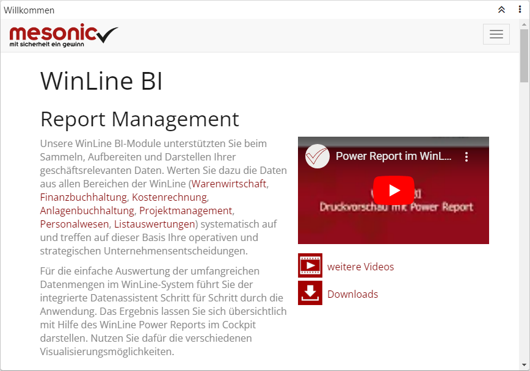
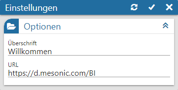

Power Report - Widgets - Browser

In diesem Widget wird eine Internetseite, welche in den Einstellungen zu definieren ist, angezeigt. Grundvoraussetzung hierfür ist eine aktive Internetverbindung, da die Internetseite zur Laufzeit geladen wird.
Einstellungen

Ø Überschrift
An dieser Stelle wird die Bezeichnung des Browser-Widgets definiert.
Ø URL
Hier wird die URL der Internetseite, welche angezeigt werden soll, hinterlegt.
Buttons

Ø Aktualisierung
Mit Hilfe dieses Buttons werden die Einstellungen gespeichert, direkt angewendet und das Einstellungsfenster bleibt geöffnet.
Ø Ok
Durch Anwahl des Buttons "Ok" werden die Änderungen angewendet und das Fenster geschlossen.
Ø Ende
Durch Anwahl des Buttons "Ende" wird das Einstellungsfenster geschlossen und nicht gespeicherte Änderungen verworfen.